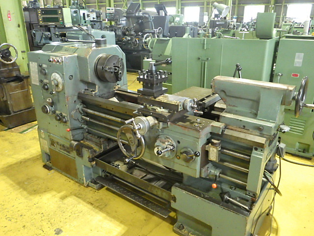

エネルギー機械コースは様々な機械やソフト、物理学を使って学んでいます。
様々な工作機械を使って製品を制作しています。
旋盤とは、加工物（ワーク）を「チャック」と呼ばれる回転する土台に取り付け、「バイト」という工具によって切削加工を行う工作機械です。溝加工や外径加工、内径加工、ねじ加工、面取りなどが行え、切削を行う機械加工の中では活躍の場面が多いです。
CADソフトを使って様々な製品の設計を行っている。「CAD」とは 「キャド」と読みます。 Computer Aided Designの略で、コンピュータ支援による設計という意味を持ち、コンピュータ上で設計や製図を行うツールです。 2次元の平面図を作成する2D CADと、立体像のモデリングで曲面や複雑な形状も可視化できる3D CADがあります。
Mコースでは様々なCADを使っているがその一例として以下に添付されているCADのソフトを使っている。
https://www.autodesk.com/jp/campaigns/design-now
このソフトを使って上の画像のような製品を設計した。
Mコースでは専門科目として様々な物理学を学びます。
専門分野は物理が特に多いため、物理が得意な生徒や好きな生徒にとってはおすすめです。又、授業で学んだ物理は実習でも使うためとても重要です。
Mコースについてもっと知りたければ高専公式ホームページをご覧ください。
https://www.ct.omu.ac.jp/